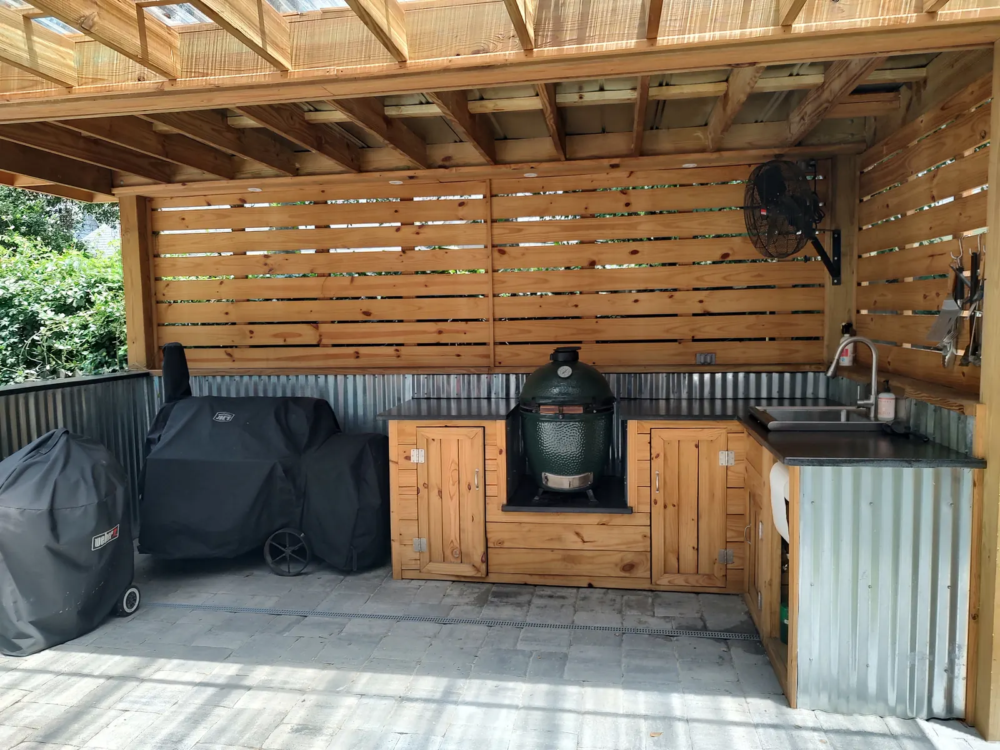
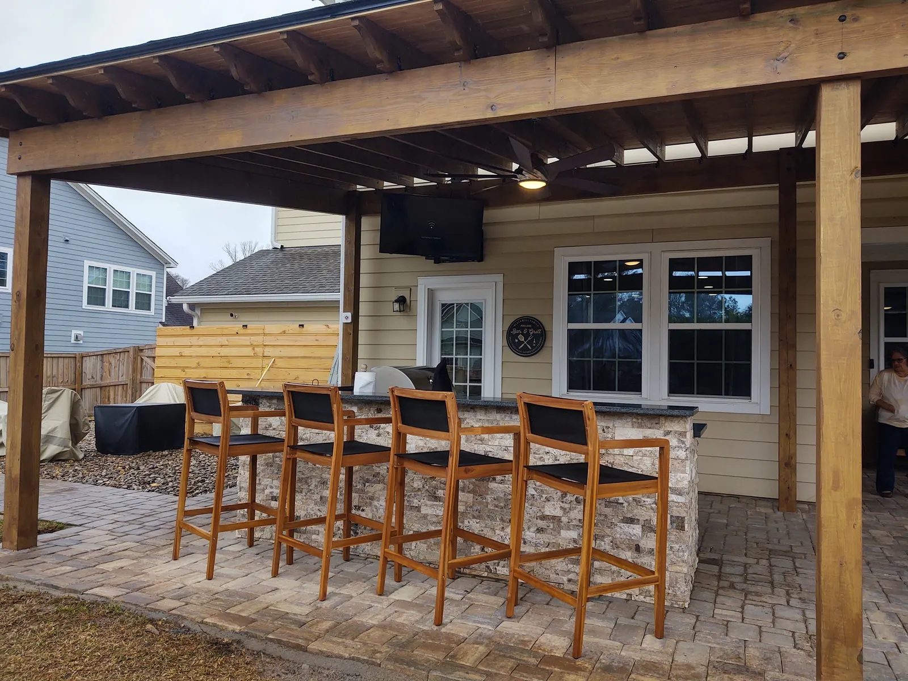

Designing Your Dream Outdoor Kitchen in Charleston: A Complete Planning Guide
In Charleston, where the climate invites year-round outdoor living and Southern hospitality is a way of life, the outdoor kitchen has evolved from a simple barbecue grill to a sophisticated, fully functional culinary hub. It is the heart of the modern backyard, a place where family and friends gather to create memories, share stories, and enjoy the unparalleled pleasure of a meal cooked and served in the open air. With Cramer’s Landscaping already ranking for “outdoor kitchens charleston sc,” this guide is designed to solidify our position as the leading experts in creating these premium outdoor living spaces.
This comprehensive guide will walk you through every step of the planning process, from defining your vision and establishing a budget to selecting the right appliances and materials. We will explore the most popular layouts, delve into the essential components of a functional outdoor kitchen, and provide Charleston-specific design considerations that will ensure your new space is both beautiful and built to last. Whether you envision a sleek, modern grilling station or a rustic, fully equipped outdoor culinary center, this guide will provide the knowledge and inspiration you need to bring your dream outdoor kitchen to life.
The Value of an Outdoor Kitchen: An Investment in Lifestyle and Property

An outdoor kitchen is more than just a place to cook; it is an investment in your lifestyle and a significant enhancement to your property’s value. In a city that cherishes its outdoor spaces, a professionally designed and installed outdoor kitchen is a highly sought-after feature that offers numerous benefits.
Expanding Your Entertainment Possibilities
An outdoor kitchen transforms your backyard into the ultimate entertainment destination. It allows you to host everything from casual family barbecues to elegant alfresco dinner parties without being separated from your guests. The open-air environment creates a relaxed and social atmosphere, making every gathering a memorable occasion.
Increasing Your Property Value
Outdoor kitchens consistently rank among the home improvement projects with the highest return on investment. A well-designed outdoor kitchen can significantly increase your property’s value, making it a wise financial investment. In a competitive real estate market, a home with a premium outdoor kitchen stands out to potential buyers and can command a higher selling price.
Enhancing Your Quality of Life
Perhaps the most significant benefit of an outdoor kitchen is the enhancement to your quality of life. It encourages you to spend more time outdoors, enjoying the fresh air and natural surroundings. It provides a convenient and enjoyable way to cook, reducing the heat and odors inside your home during the hot Charleston summers. And it creates a central gathering place for your family to connect and create lasting memories.
Planning Your Outdoor Kitchen: The Four Essential Zones
A well-designed outdoor kitchen is organized into four distinct zones, creating a logical and efficient workflow that makes cooking and entertaining a breeze. This concept, known as the “work square,” is an evolution of the traditional indoor kitchen’s “work triangle.”
The Cooking Zone: Where the Magic Happens
This is the focal point of your outdoor kitchen, housing all your cooking appliances. The grill is the star of the show, but you can also incorporate a smoker, side burners for sauces and side dishes, or even a pizza oven for a fun and versatile cooking experience. Proper ventilation is crucial in this zone to ensure safety and to dissipate smoke and heat.
The Prep Zone: Your Outdoor Workspace
Adjacent to the cooking zone, the prep zone provides the counter space you need to prepare ingredients. A sink is a highly recommended feature in this zone, as it eliminates the need to run back and forth to your indoor kitchen. Integrated storage for cutting boards, knives, and other utensils, as well as a trash bin, will make your prep zone even more functional.
The Plating & Serving Zone: The Final Touch
This dedicated area provides a space to plate your culinary creations and for guests to serve themselves. It should be located away from the heat of the grill to prevent congestion and to ensure a smooth flow of traffic. A warming drawer is a valuable addition to this zone, keeping food at the perfect temperature until it’s ready to be served.
The Entertainment Zone: Where Guests Gather
This is the social hub of your outdoor kitchen, where guests can relax and enjoy a drink without getting in the way of the chef. This zone typically includes an outdoor refrigerator for beverages, an ice maker, and bar-style seating. It’s important to create a buffer between the entertainment zone and the cooking zone to protect refrigeration units from the heat of the grill.
Choosing the Right Layout for Your Charleston Outdoor Kitchen

The layout of your outdoor kitchen will depend on the size of your space, your budget, and how you plan to use it. There are several popular layouts to consider:
Linear Layout
This is the simplest and most cost-effective layout, with all components arranged in a single line. It is a great choice for smaller spaces and can be placed against a wall of your home or as a freestanding island. While efficient for a single cook, it can become crowded with multiple people.
Galley Layout
A galley layout consists of two parallel counters, creating a highly efficient workspace for multiple cooks. This layout provides ample counter space and storage and allows for a clear separation of zones.
L-Shaped Layout
The L-shaped layout is the most popular choice for outdoor kitchens, as it provides a great balance of functionality and social interaction. It naturally creates a separation between the cooking and entertainment zones and provides ample counter space for both prepping and serving.
U-Shaped Layout
For those with a large space and a passion for entertaining, the U-shaped layout offers the ultimate outdoor kitchen experience. It provides the maximum amount of counter space and storage and creates a true outdoor room that is perfect for hosting large gatherings.
Understanding Your Budget: What to Expect When Building an Outdoor Kitchen
One of the first questions homeowners ask when considering an outdoor kitchen is, "What will this cost?" The answer varies widely based on several factors, but understanding the cost structure will help you plan a realistic budget and make informed decisions.
Cost Factors for Outdoor Kitchens in Charleston, SC
The overall cost of your outdoor kitchen project depends on several key variables. The size of your kitchen is the most obvious factor—a simple linear grill island will cost significantly less than a full U-shaped outdoor culinary center. The materials you select also have a major impact on the final price. High-end materials like granite countertops and stainless steel cabinetry will increase costs, but they also provide superior durability and aesthetics.
Appliances represent another significant portion of your budget. A basic built-in grill might cost a few thousand dollars, while a professional-grade grill with all the bells and whistles can run into five figures. Additional appliances like pizza ovens, refrigerators, and ice makers will add to the total investment. According to industry estimates, homeowners can expect to save 20% to 40% on labor costs by taking on some of the work themselves, though professional installation is strongly recommended for plumbing, electrical, and gas line work.
Permits and Professional Services
Don't overlook the cost of permits and professional services when budgeting for your outdoor kitchen. In Charleston, you will likely need permits for any structural work, plumbing, and electrical installations. Deck or patio permits typically range from $220 to $500, while plumbing permits can cost between $50 and $500. Overall, permits can add anywhere from $250 to $2,000 to your project cost.
While hiring professionals increases the upfront cost, it ensures that your outdoor kitchen is built to code, functions properly, and will last for years to come. At Cramer's Landscaping, we handle all aspects of the permitting process and work with licensed plumbers and electricians to ensure a seamless installation.
Phasing Your Project
If your dream outdoor kitchen exceeds your current budget, consider phasing the project. Start with the essential elements—a quality grill, basic counter space, and storage—and add features like a pizza oven, outdoor refrigerator, or bar area in later phases. This approach allows you to begin enjoying your outdoor kitchen sooner while spreading the investment over time.
Selecting Materials and Appliances for Your Outdoor Kitchen

The materials and appliances you choose will define the look, feel, and functionality of your outdoor kitchen. It is essential to select products that are designed for outdoor use and can withstand the Charleston climate.
Durable and Beautiful Materials
- Countertops: Granite, concrete, and stainless steel are all excellent choices for outdoor countertops, offering a combination of durability, beauty, and ease of maintenance.
- Cabinetry: Stainless steel and marine-grade polymer are the most durable options for outdoor cabinetry, as they are resistant to moisture, salt, and insects.
- Flooring: Pavers, natural stone, and concrete are all great choices for outdoor kitchen flooring, providing a durable and attractive surface that can withstand heavy foot traffic.
Essential Outdoor Appliances: Building Your Culinary Arsenal
The appliances you select will define the functionality and versatility of your outdoor kitchen. Here is a comprehensive guide to the must-have and nice-to-have appliances for outdoor kitchens Charleston SC.
The Grill: The Star of the Show
This is the most important appliance in your outdoor kitchen, and it is worth investing in a high-quality model. Gas grills are the most popular choice for their convenience and precise temperature control. Look for features like multiple burners, a high BTU output for powerful heat, and durable stainless steel construction. If you are a traditionalist, a charcoal grill or kamado-style cooker provides that authentic smoky flavor that gas cannot replicate. For the ultimate flexibility, consider a hybrid grill that can use both gas and charcoal.
Refrigeration: Keep It Cool
An outdoor-rated refrigerator is essential for keeping beverages, condiments, and ingredients cold and easily accessible. Standard indoor refrigerators are not designed to withstand outdoor temperatures and humidity, so it is crucial to invest in a model specifically built for outdoor use. Consider a beverage cooler for drinks, a wine cooler for your favorite vintages, or even a kegerator for draft beer on tap.
The Sink: A Game-Changer for Convenience
A sink with hot and cold running water will make your outdoor kitchen exponentially more functional. It eliminates the need to run back and forth to your indoor kitchen to wash hands, rinse vegetables, or clean dishes. Pair your sink with a pull-down faucet for added versatility and a soap dispenser for convenience.
Pizza Oven: Elevate Your Culinary Game
Pizza ovens have exploded in popularity in recent years, and for good reason. They can reach extremely high temperatures, allowing you to cook authentic Neapolitan-style pizza in just a few minutes. Beyond pizza, these versatile ovens can also be used to roast vegetables, bake bread, and even cook meats. Wood-fired ovens provide the most authentic flavor, while gas-powered models offer greater convenience.
Ice Maker: The Unsung Hero
An outdoor ice maker ensures you always have a steady supply of ice for drinks, without having to constantly refill ice trays or run inside. This is especially valuable during large gatherings when ice demand is high.
Side Burners and Griddles: Expand Your Cooking Options
Side burners are perfect for heating sauces, boiling water for corn, or sautéing vegetables while your main course cooks on the grill. A built-in griddle provides a large, flat cooking surface ideal for breakfast foods like pancakes and bacon, or for searing steaks and seafood.
Storage Solutions: Keep Everything Organized
Weatherproof cabinets and drawers are essential for storing cooking tools, utensils, and supplies. Look for marine-grade stainless steel or high-density polyethylene (HDPE) cabinets that are resistant to moisture, salt, and insects. Incorporate specialized storage like a trash pullout, paper towel holder, and spice rack to keep your outdoor kitchen organized and functional.
Popular Outdoor Kitchen Design Trends in Charleston
Outdoor kitchen design is constantly evolving, and Charleston homeowners are embracing the latest trends to create spaces that are both stylish and functional.
The Outdoor Living Room Concept
Modern outdoor kitchens are increasingly designed as complete outdoor living rooms, with comfortable seating, weatherproof furniture, outdoor televisions, and sound systems. The goal is to create a seamless extension of your indoor living space where you can cook, dine, and relax in comfort.
Sustainable and Eco-Friendly Design
Homeowners are increasingly conscious of the environmental impact of their outdoor spaces. Sustainable design elements like energy-efficient LED lighting, solar-powered appliances, and locally sourced materials are growing in popularity. Permeable paving materials allow rainwater to filter through, reducing runoff and supporting groundwater replenishment.
Smart Technology Integration
Smart technology is making its way into outdoor kitchens, with Wi-Fi-enabled grills that allow you to monitor cooking temperatures from your smartphone, automated lighting systems that adjust based on the time of day, and outdoor speakers that connect to your home's audio system.
Bold Design Statements
While neutral tones remain popular, many homeowners are making bold design statements with colorful tile backsplashes, unique countertop materials, and custom lighting. The outdoor kitchen is no longer just a functional space—it is a reflection of personal style and a centerpiece of the backyard.
Charleston-Specific Design Considerations

When designing an outdoor kitchen in Charleston, it is important to consider the unique aspects of the local climate and lifestyle.
Embrace the Shade
With Charleston's hot and sunny summers, shade is not just a luxury—it is a necessity. Incorporate a pergola, awning, or large umbrella into your design to create a comfortable and protected space. A pergola can also support climbing plants like wisteria or jasmine, adding natural beauty and additional shade. Consider a retractable awning for flexibility, allowing you to enjoy the sun when you want it and shade when you need it.
Beat the Bugs
Mosquitoes and other insects can be a nuisance in the Lowcountry, especially during the warm months. Consider screening in your outdoor kitchen or installing ceiling fans to keep the bugs at bay. Citronella candles, bug-repelling plants like lavender and lemongrass, and outdoor misting systems can also help create a more comfortable environment.
Choose Weather-Resistant Materials
Charleston's coastal climate, with its high humidity, salt air, and occasional tropical storms, demands materials that can withstand the elements. Stainless steel appliances and cabinetry are highly resistant to corrosion. Granite and concrete countertops are durable and low-maintenance. For flooring, choose materials like pavers or natural stone that can handle moisture and temperature fluctuations without cracking or warping.
Integrate with Your Landscape
Your outdoor kitchen should feel like a natural part of your overall landscape design. Work with the existing topography and vegetation to create a cohesive look. If you have a pool, consider positioning your outdoor kitchen nearby to create a resort-like atmosphere. Incorporate landscape lighting to highlight architectural features and create ambiance in the evening.
Reflect Charleston's Architectural Heritage
Charleston is known for its stunning historic architecture, and your outdoor kitchen can pay homage to this heritage. Choose materials and design elements that complement your home's style. For a historic property, consider classic brick or natural stone. For a more modern home, sleek concrete and stainless steel create a contemporary look.
Maintaining Your Outdoor Kitchen: Keeping It Beautiful Year After Year
A well-maintained outdoor kitchen will provide years of enjoyment and retain its beauty and functionality. Here are some essential maintenance tips for outdoor kitchens Charleston SC.
Regular Cleaning
Clean your grill after each use to prevent grease buildup and extend its lifespan. Wipe down countertops and stainless steel surfaces regularly to remove dirt, pollen, and salt residue. Sweep or hose down flooring to keep it looking fresh.
Seasonal Deep Cleaning
At least once a year, perform a deep cleaning of your entire outdoor kitchen. This includes cleaning the interior of your grill, checking and cleaning burners, inspecting gas lines for leaks, and cleaning out cabinets and drawers. Check all appliances to ensure they are functioning properly.
Protect Against the Elements
During the off-season or when your outdoor kitchen is not in use for extended periods, cover appliances with weatherproof covers to protect them from rain, sun, and debris. If you have a wood pergola or furniture, apply a fresh coat of sealant annually to protect against moisture and UV damage.
Professional Inspections
Consider scheduling an annual professional inspection of your outdoor kitchen's plumbing, electrical, and gas systems. This proactive approach can identify potential issues before they become costly problems and ensure that your outdoor kitchen remains safe and functional.
Begin Your Outdoor Kitchen Journey with Cramer's Landscaping

An outdoor kitchen is a significant investment, but with careful planning and professional execution, it is an investment that will pay dividends for years to come. At Cramer's Landscaping, we have the expertise and experience to guide you through every step of the process, from initial design to final installation. We are committed to creating outdoor kitchens Charleston SC residents can be proud of—spaces that are not only beautiful and functional but also built to withstand the unique challenges of the Charleston climate.
Our team of experienced designers understands the nuances of outdoor living in the Lowcountry. We know how to create shade structures that provide relief from the summer sun, select materials that can withstand salt air and humidity, and design layouts that maximize both functionality and social interaction. We work closely with licensed plumbers, electricians, and gas fitters to ensure that every aspect of your outdoor kitchen is installed to the highest standards of safety and quality.
Whether you envision a simple grilling station or a fully equipped outdoor culinary center, we have the creativity and craftsmanship to bring your vision to life. We invite you to explore our outdoor kitchens service page to learn more about our design philosophy and to see examples of our work. You can also browse our other services, including hardscape installation, patios and pavers, and landscape lighting, to create a complete outdoor living environment.
If you are ready to take the first step toward creating your dream outdoor kitchen, contact us today for a complimentary design consultation. Let us help you transform your backyard into the ultimate destination for cooking, entertaining, and creating lasting memories. Learn more about our company and our commitment to excellence in every project we undertake.
Frequently Asked Questions About Outdoor Kitchens in Charleston
How much does an outdoor kitchen cost in Charleston, SC?
The cost varies widely based on size, materials, and appliances, but most homeowners can expect to invest between $10,000 and $50,000 for a professionally designed and installed outdoor kitchen. Simple grill islands start around $5,000, while elaborate outdoor culinary centers can exceed $100,000.
Do I need a permit to build an outdoor kitchen in Charleston?
Yes, in most cases you will need permits for structural work, plumbing, electrical, and gas installations. A professional contractor like Cramer's Landscaping will handle the permitting process for you.
What is the best grill for an outdoor kitchen?
The best grill depends on your cooking style and preferences. Gas grills offer convenience and precise temperature control, while charcoal grills provide authentic smoky flavor. High-quality stainless steel construction and a good warranty are essential features to look for.
Can I use my outdoor kitchen year-round in Charleston?
Yes! Charleston's mild winters make it possible to use your outdoor kitchen year-round. Adding a fireplace or patio heater can extend comfort into the cooler months.
How long does it take to build an outdoor kitchen?
The timeline varies based on the complexity of the project, but most outdoor kitchens take between 4 and 8 weeks from design to completion. This includes time for permits, material procurement, and installation.
Planning a Project of Your Own?
See everything we design and build, or get in touch to talk through your ideas with Doug and Zach.